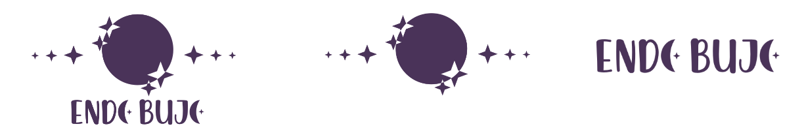

Le projet
EndoBujo est une campagne ulule pour lancer un carnet de notes permettant aux personnes atteintes d'endométriose de suivre leur maladie chronique. L'EndoBujo est le support idéal pour accompagner les femmes avec de l'endométriose.
Choix graphiques
Logotype
Iconographie

Couleurs
Webdesign et Intégration
Création d'un site web en support pour communiquer sur l'endométriose avec la rédaction d'une trentaine d'articles sur le cycle féminin et l'endométriose avec optimisation SEO pour faire ressotir l'EndoBujo dans des suggestions de recherches sur l'endométriose avec la mise en place de Google Analytics pour suivre le trafic et rédiriger les articles sur les bons mots-clefs.
Créer une communauté
Avec le site web, nous avons créés un support de communication pour la communauté des endogirls. Ce compte nous permet de simplifier et résumer les dernières nouvelles sur l'endométriose, nos articles ou bien de créer du lien.

+800
en 6 mois.

+600
en 1 mois.

+250
en 15 jours.
Nous avons choisis un support qui est utilisé par un public principalement féminin et qui met l'accent sur l'esthétique du contenu. La communauté d'EndoBujo s'élève à plus de 800 abonnés car elles sont plus de 600 à nous suivres sur Instagram et plus de 200 sur Facebook.